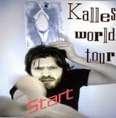

| Artist: | Kalles World Tour |
| Title: | Start |
| Label: | self produced KWT 01 |
| Length(s): | 41 minutes |
| Year(s) of release: | 2005 |
| Month of review: | [01/2006] |
| 1) | Start | 4.44 |
| 2) | No | 4.48 |
| 3) | Normal | 4.23 |
| 4) | Be | 3.59 |
| 5) | Humor | 5.34 |
| 6) | Tango | 3.13 |
| 7) | Capitalist | 4.23 |
| 8) | Kotelet | 1.19 |
| 9) | Come Blood, Bleed Hair Kom Blot Blidt Her | 4.43 |
| 10) | Jeg Har Stâlet Denne Sang | 4.08 |
No has fast rolls and a generally high pace. The music reeks a bit of jazzrock, but the material continues to be very song oriented which makes the music all the more likable. No fiddling around or noodling here.
It shows that the band leader plays the synths and the drums: Normal also shows an inordinate percussiveness. Be is a more languid tune, slightly jazzy in feel, also because of the laid back vocal style. The vocal melody is a maybe a bit too easy, too sugary, but it could do well as a love ballad (with the right amount of luck).
And here's Humor. After some hesitation, it opens with full, but quirky keyboards, and a prominent bass line. Then the music takes some gas back for the off beat vocal parts. The vocal style can be likened to Thinking Plague, although less extreme. The guitar is somewhat of the meandering kind, which does not help my appreciation of this song. The very digital sounding synths are nice though. In the second half however, the vocals become much more melodic and the vocalist also sings more from the toes (in contrast with the typical art rock/new wave vocals which are rather distant and cold).
The opening of Tango is characteristic for the bands style. They romp through indeed tango styled piece of music, but which also includes tempo changes and various quirky elements. There is also plenty of humour here, both musically as well lyrically. The intermezzo has a few vibes and some electric guitar, but the rhythm, keyboards and the vocal melody have the lead as usual.
We continue the frolicness witth the wah-wah of Capitalist. Although more rhythmic and lively sounding, this kind of music is what I tend to associate with eighties New Wave of the more poppy kind. Still, in terms of signature changes and the like, Kalles World Tour has a bit more dare.
Kotelet is short, and styled similarly to Alamaailman Vasarat's kebab rock. The final two tracks have partially Danish lyrics. The first one, Come Blood, Bleed Hair Kom Blot Blidt Her, has a rather symphonic opening and can be likened to Flash And The Pan and 10CC (although there are least as many differences with those bands). The blues rock solo is quite surprising.
Jeg Har Stâlet Denne Sang is the final song on this album, opening somewhat in a jazz rock style, funky but with vibes. The vocal parts are poppy and up-beat.